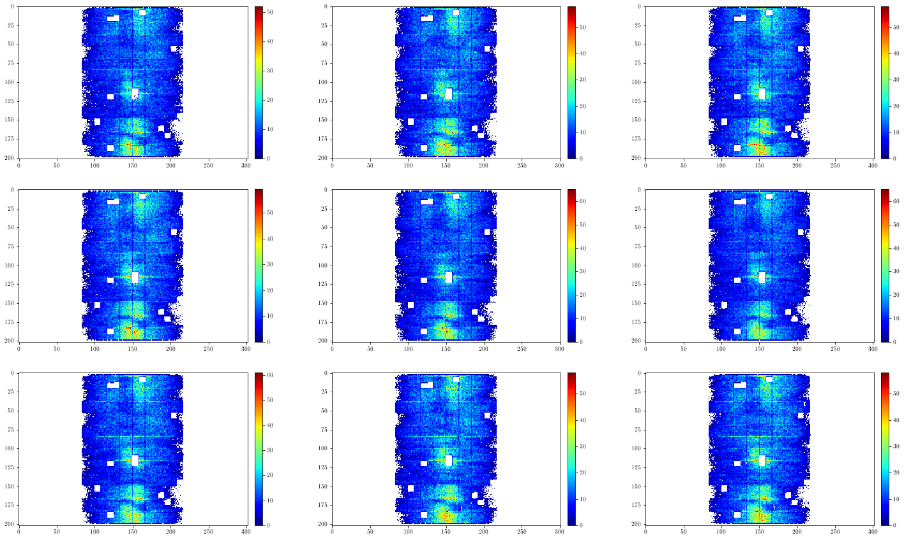
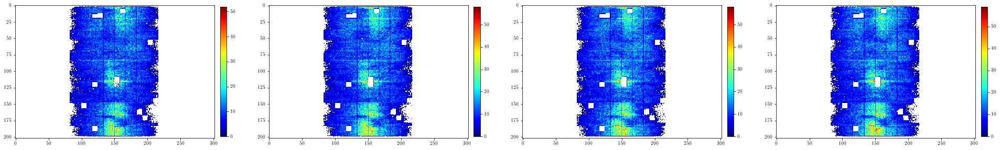
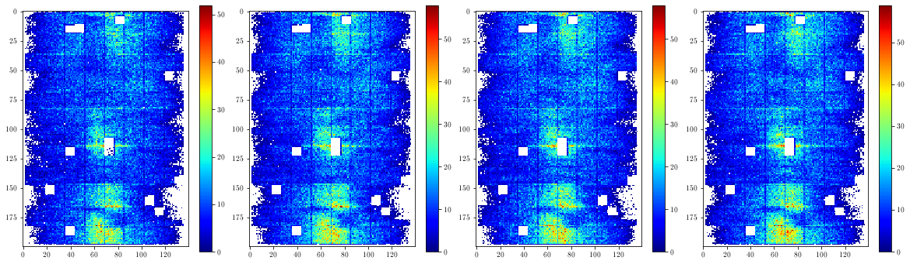
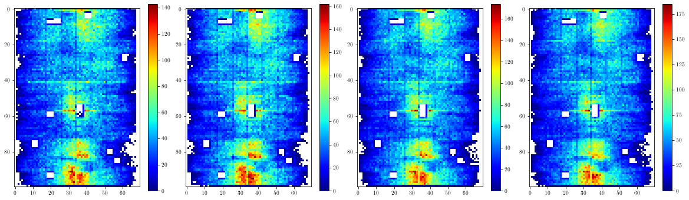
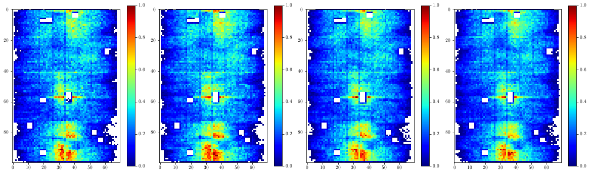
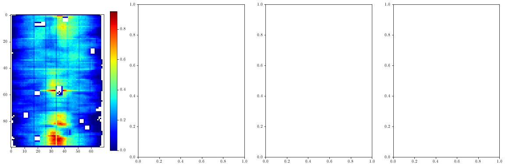

Plot the histograms for general investigation and visual inspection
For 2D histograms (as opposed to plot_histograms.ipynb which is for 1D histograms only)
### imports
# external modules
import sys
import os
import numpy as np
import matplotlib.pyplot as plt
import importlib
# local modules
sys.path.append('../utils')
import dataframe_utils as dfu
import plot_utils as pu
import hist_utils as hu
importlib.reload(dfu)
importlib.reload(pu)
importlib.reload(hu)
sys.path.append('../src')
import DataLoader
importlib.reload(DataLoader)
<module 'DataLoader' from '/eos/home-l/llambrec/SWAN_projects/ML4DQM-DC/tutorials/../src/DataLoader.py'>
### read the data
# note: this cell assumes you have a csv file stored at the specified location,
# containing only histograms of the specified type;
# see the tutorial read_and_write_data for examples on how to create such files!
histname = 'clusterposition_zphi_ontrack_PXLayer_1'
filename = 'DF2017B_'+histname+'_run297289.csv'
datadir = '../data'
dloader = DataLoader.DataLoader()
df = dloader.get_dataframe_from_file( os.path.join(datadir, filename) )
print('raw input data shape: {}'.format( dfu.get_hist_values(df)[0].shape ))
# select a single run
#runs = dfu.get_runs(df)
#print('number of runs: '+str(len(runs)))
#print(runs) # uncomment this to see a printed list of available runs
#runnbs = [297056] # you can also add multiple runs to the list to plot them all together
#df = dfu.select_runs(df, runnbs)
# select DCS-bit on data
df = dfu.select_dcson(df)
print('number of selected lumisections: '+str(len(df)))
INFO in DataLoader.get_dataframe_from_file: loading dataframe from file ../data/DF2017B_clusterposition_zphi_ontrack_PXLayer_1_run297289.csv...
INFO in DataLoader.get_dataframe_from_file: sorting the dataframe...
INFO in DataLoader.get_dataframe_from_file: loaded a dataframe with 15 rows and 14 columns.
raw input data shape: (15, 202, 302)
number of selected lumisections: 15
# extract the histograms as a numpy array from the dataframe
(histograms,runnbs,lsnbs) = dfu.get_hist_values(df)
print('shape of histogram array: {}'.format(histograms.shape))
print('shape of run number array: {}'.format(runnbs.shape))
print('shape of lumisection number array: {}'.format(lsnbs.shape))
# additional info, not needed to get the histograms but may contain useful info
xmin = df.at[0,'Xmin']
xmax = df.at[0,'Xmax']
nxbins = df.at[0,'Xbins']
ymin = df.at[0,'Ymin']
ymax = df.at[0,'Ymax']
nybins = df.at[0,'Ybins']
shape of histogram array: (15, 202, 302)
shape of run number array: (15,)
shape of lumisection number array: (15,)
# make a plot of a single histogram
index = 10
hist = histograms[index]
pu.plot_hist_2d(hist,title='a histogram title',xaxtitle='x axis title',yaxtitle='y axis title')
(<Figure size 432x288 with 2 Axes>,
<AxesSubplot:title={'center':'a histogram title'}, xlabel='x axis title', ylabel='y axis title'>)

# make a plot of multiple histograms next to each other
_ = pu.plot_hists_2d(histograms[:9],ncols=3)

# make a gif showing the evolution over time
figname = 'temp_gif.gif'
titles = []
for lsnb,runnb in zip(lsnbs,runnbs):
titles.append('run {}, lumisection {}'.format(runnb,lsnb))
pu.plot_hists_2d_gif(histograms,titles=titles,figname=figname)
# note: to view the result, you can directly open the file saved as figname in swan, it will show the animated gif
# (or you can download it and view it with whatever gif viewer you normally use)
# cropping, rebinning, normalization and averaging
print('original histograms:')
_ = pu.plot_hists_2d(histograms[:4],ncols=4)
plt.show()
# cropping:
# (note: here you can also just manually slice the array, but the dedicated function shown here might be useful in more involved workflows)
print(histograms.shape)
modhists = hu.crophists(histograms,[slice(1,-1,None),slice(1,-1,None)]) # remove under- and overflow bins
print(modhists.shape)
modhists = hu.crophists(modhists,[slice(None,None,None),slice(80,220,None)]) # cut out uninteresting parts
print(modhists.shape)
print('cropped histograms:')
_ = pu.plot_hists_2d(modhists[:4],ncols=4)
plt.show()
# rebinning:
print(modhists.shape)
modhists = hu.rebinhists(modhists,(2,2))
print(modhists.shape)
print('rebinned histograms:')
_ = pu.plot_hists_2d(modhists[:4],ncols=4)
plt.show()
# normalizing:
modhists = hu.normalizehists(modhists)
print('normalized histograms:')
_ = pu.plot_hists_2d(modhists[:4],ncols=4)
plt.show()
# averaging
avghists = hu.averagehists(modhists,1)
print('average histogram(s):')
_ = pu.plot_hists_2d(avghists[:min(4,len(avghists))],ncols=4)
plt.show()
original histograms:

(15, 202, 302)
(15, 200, 300)
(15, 200, 140)
cropped histograms:

(15, 200, 140)
(15, 100, 70)
rebinned histograms:

normalized histograms:

average histogram(s):

# equivalent way to obtain the same histograms but with less typing
(histograms) = hu.preparedatafromdf(df,
cropslices=[slice(1,-1,None),slice(81,221,None)],
rebinningfactor=(2,2),
donormalize=True,
doplot=False)
_ = pu.plot_hists_2d(histograms[:4],ncols=4)